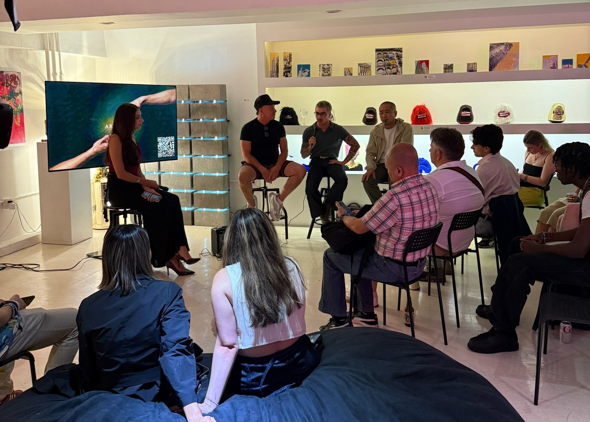
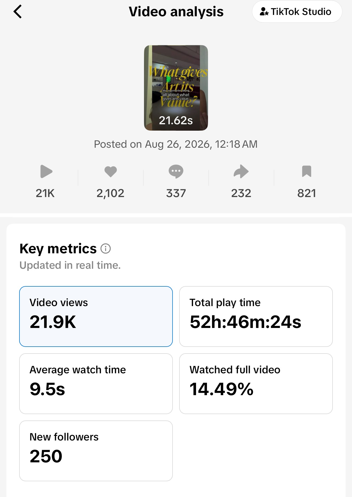
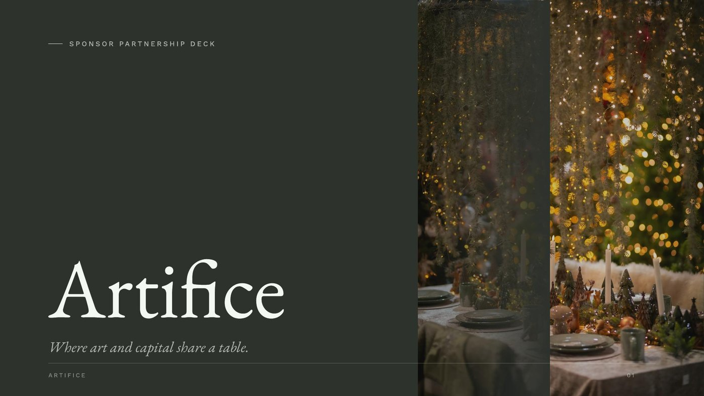
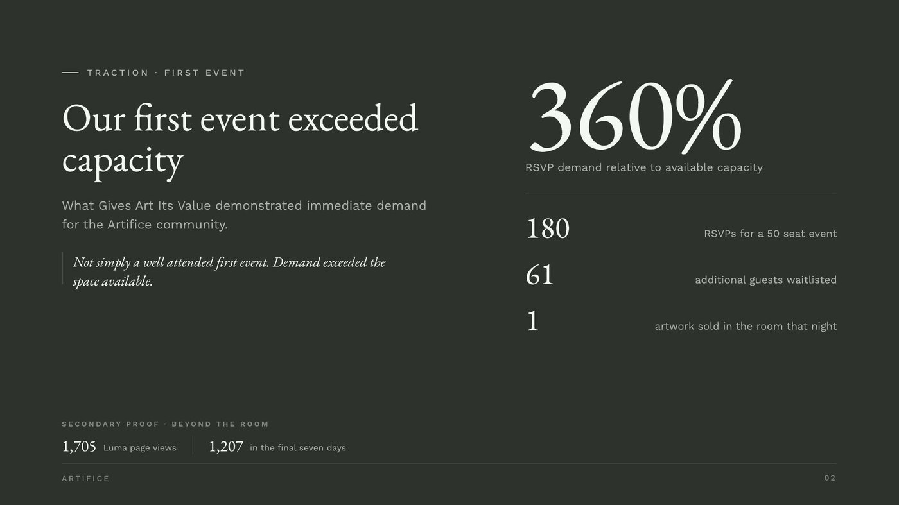
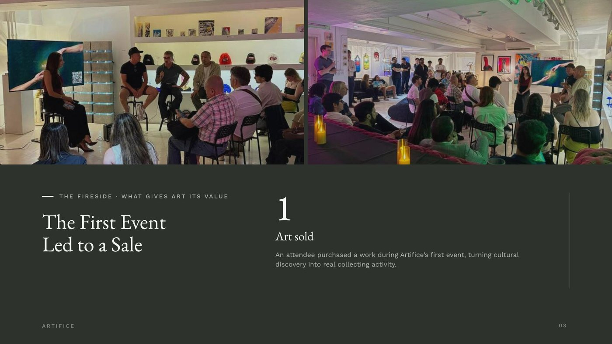
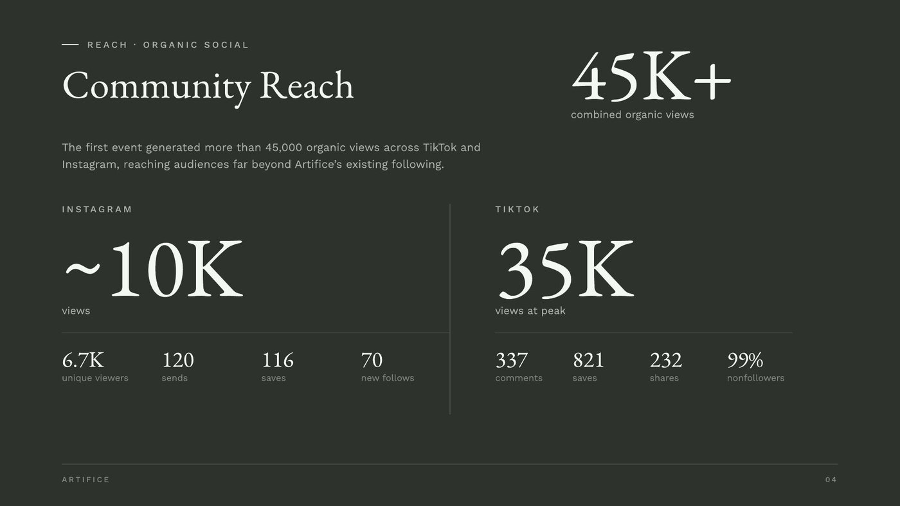
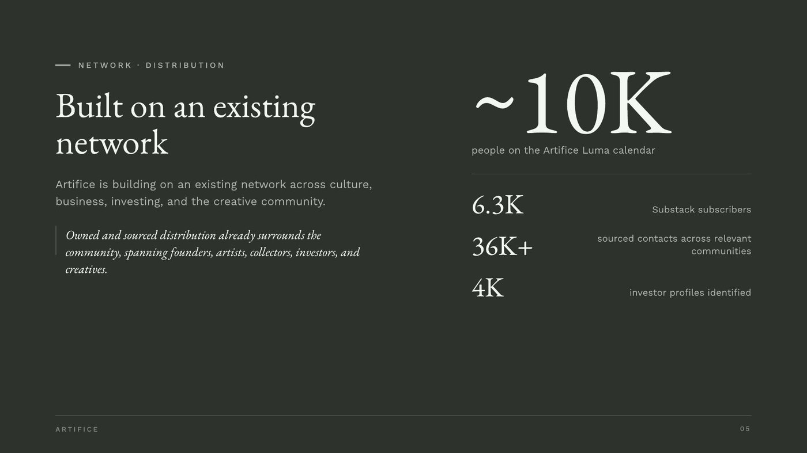
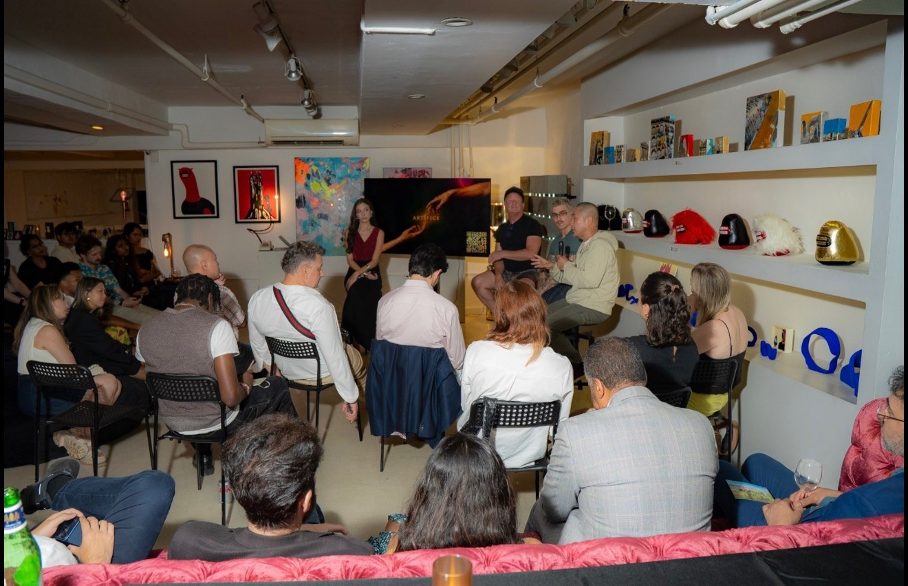

My role:COO, working across go-to-market strategy, operations, community development, CRM and partnerships.
Artifice started as a community built around art, culture and conversation. Our first event, What Gives Art Its Value?, was not meant to prove a mature business model. It was an early market test.
That did not prove we had a repeatable business yet. It did prove there was enough audience demand and commercial interest to keep testing the model.
My work after the launch focused on turning that signal into something more structured: defining the audience, shaping the partner value proposition, organizing the CRM and relationship infrastructure, and helping develop a B2B event marketing offer the team could take into future partner conversations.

The fireside that started it: a full room at What Gives Art Its Value.
Could Artifice create an experience compelling enough that people would actively sign up, share it and want access?
If the event attracted the right mix of artists, collectors, founders, investors, creatives and operators, would brands or strategic partners want access to that community?
Could the first event create enough signal to justify building a more structured offer, developing partnerships and investing in future programming?
The goal was not to maximize immediate revenue.
The goal was to learn whether the demand, audience and commercial potential were strong enough to keep building.
The first event showed the concept could generate interest across these groups. That mattered because the value of Artifice was not only the event itself.
The potential business value was the ability to curate a relevant audience around a topic, experience or partner objective.
Together, these signals gave the team something concrete to bring into partner conversations.
Artifice creates curated cultural experiences that help brands and partners connect with relevant communities in a way that feels useful to the audience, not like a traditional advertisement.
My contribution was helping translate the event response into a clearer audience proposition and a more structured B2B offer.
Partners could support or co-create conversations, curated dinners, educational sessions, recurring series or topic-driven experiences.
Partners could contribute to food and beverage, gifting, venue, guest experience or hosting.
Partners could participate through commissioned artwork, installations, artist integrations or live creative programming.
For partners that needed something more custom, Artifice could develop an activation around a specific audience, product, cultural topic, launch or community objective.
That shift made the offer more strategic and easier to scope.
Define the people the event or activation is intended to reach.
Shape the topic and experience around something the audience already cares about.
Use social content, community relationships, direct outreach, partners and existing networks to generate attention.
Move people from awareness into: social reach → event page → RSVP → waitlist or attendance.
Use audience and demand data to support conversations with potential sponsors and collaborators.
Make sure the event experience reflects what was promised to both the audience and the partner.
Review what generated demand, which segments responded, which partners were interested and what should change next.
Each round of learning feeds the next audience definition.
These numbers are directional proof of demand, not a fully instrumented growth funnel.
The challenge was not simply having contacts. It was identifying which people mattered for each GTM objective.
We later narrowed parts of that universe into smaller priority segments for focused outreach and partnership development. That made the CRM a GTM tool rather than a contact database.

One event recap video did the top-of-funnel work on its own: 21.9K views, 52 hours of total watch time and 250 new followers, off 2,102 likes, 337 comments, 232 shares and 821 saves.
Every save and follow is another name that has to land somewhere. That is the volume the CRM was built to absorb.
That gave business development and partnerships something more concrete than a general sponsorship ask. The event metrics, audience definition and partner packages became proof points for outreach.
At an early-stage startup, marketing and business development overlapped heavily.

01
02
03
04
05Contributed relationships, programming, creative direction, social content and event execution. Leigha led social content.
The first event’s social reach, registrations and overall response are team outcomes. My GTM contribution was helping translate those outcomes into a clearer commercial direction and a more structured way to take Artifice to market.
| Result | What it demonstrates |
|---|---|
| 180 RSVPs | Strong registration interest in the event |
| 61 people waitlisted | Additional demand beyond the event’s limited capacity |
| ~45K organic views | Organic awareness and content reach across Instagram and TikTok |
| 1,705 Luma page views | Traffic driven to the event page |
| One artwork sold | Evidence of commercial activity inside the experience |
| Partnership deck developed | Early sales enablement and partner packaging |
| CRM segmentation and follow-up infrastructure | More structured audience and partner development |
These results show early demand and commercial potential.
Those were the next things the business needed to test.

The room, mid-conversation.
The important outcome of the first event was not that it answered every question.
It gave us enough evidence to ask better ones.
To turn attention into a business, you need to connect:
Community building and GTM marketing are closely connected when the audience itself becomes part of the value proposition.
My product design background also shaped how I approached the work. I naturally thought about the full journey:
Demand tells you where to look. GTM turns that signal into something repeatable.